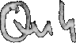
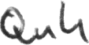
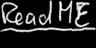
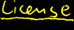
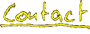

|
20060320 Quh 0.3.0 is available from CVS  will replace all other audio players because there are too many :-)  supports 100+ different noise containing file, stream or data formats/sources/filters like: cdda, mp3, ogg, flac, sox sound tools (aiff, al, au, auto, avr, cdr, cvs, dat, vms, gsm, hcom, la, lu, maud, mp3, nul, prc, raw, sb, sf, sl, smp, sndt, sph, 8svx, sw, txw, ub, ul, uw, voc, ogg, vox, wav, wve), sndlib (raw, aifc, aiff, snd (Sun), au (Next), wav, bicsf, mpeg, sd1, sd2, avr, iff (Amiga), smp, voc, nist, sf2), sndfile (aiff, au, avr, htk, iff, mat, paf, pvf, raw, sds, sf, voc, w64, wav, xi), audiofile (raw, aifc, aiff, snd (Sun), au (Next), wav, bicsf, mpeg, sd1, sd2, avr, iff (Amiga), smp, voc, nist, sf2), mikmod (669, dsm, far, it, med, mod, mtm, s3m, stm, ult, xm), xmp (669, ac1d, alm, amd, chn, crb, di, digi, emod, exo, far, fc-m, fnk, imf, it, kris, ksm, m15, mdl, med, mod, modl, mp, mtm, mtn, np, okta, pm, pp10, prom, pru, ptm, rad, s3m, sfx, stim, stm, stx, tp, ult, unic, wn, wow, xann, xm, zen), wav, stdin, raw supports 10+ different ways of producing noise like Alsa, OSS, ESD, libao, SDL, PC speaker (if present), ... (optionally) takes advantage of libraries like audiofile, sndfile, xmp (Extended Module Player), mikmod, sidplay, SDL, festival, ... can be controlled with a joystick is like an reference example on how to cultivate bloated API's into an file-operations analogy uses keyboard shortcuts similar to those of MPlayer speaks text files in different languages using speech synthesis (festival) does NOT require an installed desktop enviroment or GUI toolkit is only ~100kBytes in size with all support enabled (~50 with upx compression) sources utilize for the first time a real autoconf replacement    |